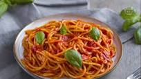

Tomato pasta

Description:
Tomato is the most famous Italian dish.
Every Italian person has eaten it atleast once in his/her life.
It's usually made with tomato, basil and of course pasta.
Ingredients for 2 persons:
- 160g of pasta;
- a bootle of tomato sauce (around 500ml of tomato sauce);
- oil, salt and basil to taste.
Steps:
- Put water and some salt in a pan and wait until the water boils;
- meanwhile, cook the tomato sauce with oil and basil in another pan;
- put some salt in the sauce while it cooks;
- once the water boils, throw in the pasta and wait until it's cooked;
- when the pasta is ready, drain it and put the sauce on top of it;
- mix pasta and sauce until they stick together;
- enjoy your tomato sauce! Buon appetito!
Return to the list of recipes